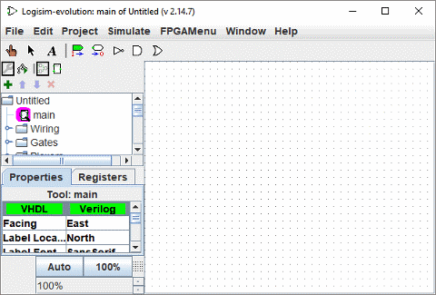

Previous: Beginner's tutorial
Step 0: Orienting yourself
When you start Logisim, you'll see a window similar to the following. Some of the details may be slightly different since you're likely using a different system than mine.

All Logisim is divided into three parts, called the explorer pane, the attribute table, and the canvas. Above these parts are the menu bar and the toolbar
We can quickly dispose of the explorer pane and the attribute table: We won't be examining them in this tutorial, and you can just ignore them. Also, the menu bar is self-explanatory.
That leaves the toolbar and the canvas. The canvas is where you'll draw your circuit; and the toolbar contains the tools that you'll use to accomplish this.
Next: Step 1: Adding gates